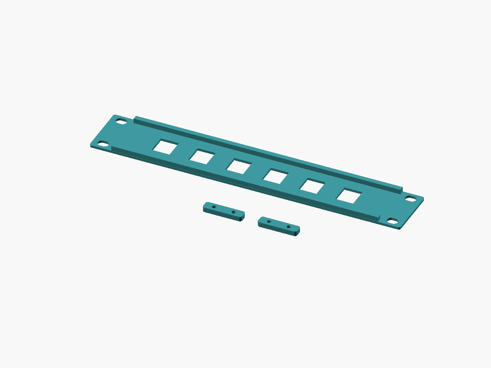
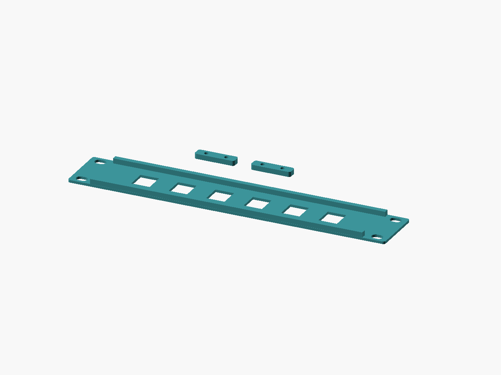

Rack details / v1
Railleaf
Make room for a neater connection.
Parametric 1U keystone faces, split panels and blanks for nominal 10 and 19 inch racks.


- Delivery
- Digital ZIP
- Included
- 10 STL files + source
- License
- CC-BY-4.0 models / MIT source
- Price
- TBD — sales not open
TODO: Etsy listing URL and price. This preview link does not open checkout. No purchase is available yet.
Digital files only. No printed parts, filament, tools or hardware are supplied. AI-assisted CAD scripting was used.
Start small. Check the fit.
Start with the keystone coupon. The full 19 inch panel needs a large bed; its halves are 241.3 mm wide. Verify rails, module latches, hardware and cable clearance. Support cable weight separately.
No physical print or fit test has been performed. Print settings are starting points.
01 / THE DESIGN
Useful details, open to adjustment.
Turn unused 1U space into a measured cable interface. Railleaf combines a thin latch face with rear edge ribs and two supported splice pads. Choose 254 mm (10in) with six ports or 482.6 mm (19in) with twelve ports; zero-port blanks are also included. Nominal mounting spans are 236.525 and 465.125 mm. Check your rails before printing.
Each opening is 14.7 x 16.2 mm with a 2 mm face. These are nominal targets, not universal keystone compatibility. Print the 32 x 30 mm coupon and check your actual module and latch. Set port count, pitch, face thickness, and total cutout clearance in OpenSCAD.
Print face down in PETG, 0.20 mm layers, 5 walls, 30% gyroid, 5 top/bottom layers; supports off. PLA is suitable for a cool bench fit check. The complete 19in STL needs a large bed: use the two 241.3 mm halves on a 256 mm bed. The 10in halves are 127 mm wide for smaller beds. Print two splice straps per split panel. Assemble with four M3 x 16 screws, four nuts, and eight washers, and mount using your rack hardware. Hand-tighten; validate cable loads. This is a connector blank, not an equipment shelf or electrical enclosure.
02 / PRINT NOTES
A starting point for your printer.
- Material
- PETG
- Alternative
- PLA (cool bench trial)
- Nozzle / layer
- 0.4 / 0.20 mm
- First layer
- 0.20 mm
- Walls
- 5
- Infill
- 30% gyroid
- Top / bottom layers
- 5 / 5
- Supports / brim
- Off / 0 mm
- PLA nozzle / bed
- 210 / 60 °C
- PETG nozzle / bed
- 240 / 80 °C
Orientation
Face on bed; ribs and splice pads up. Splice straps flat.
Unverified starting points; use filament and printer guidance, tune coupons.
Preserve the shared library path when editing OpenSCAD. Adjust the fit parameter and re-export; do not scale the entire STL to fix a clearance.
Read the printing FAQ03 / DIMENSIONS
Measure before you make.
Nominal CAD bounds in millimetres. Physical print dimensions will vary.
| Export | Role | X × Y × Z (mm) |
|---|---|---|
railleaf-10in-6port-full | part | 254 × 43.6 × 6 |
railleaf-10in-6port-left | part | 127 × 43.6 × 6 |
railleaf-10in-6port-right | part | 127 × 43.6 × 6 |
railleaf-10in-blank | part | 254 × 43.6 × 6 |
railleaf-19in-12port-full | part | 482.6 × 43.6 × 6 |
railleaf-19in-12port-left | part | 241.3 × 43.6 × 6 |
railleaf-19in-12port-right | part | 241.3 × 43.6 × 6 |
railleaf-19in-blank | part | 482.6 × 43.6 × 6 |
railleaf-splice | part | 32 × 8 × 4 |
railleaf-keystone-coupon | coupon | 32 × 30 × 2 |
04 / IN THE ZIP
The files travel together.
52 files · 411.3 KiB · release v1. STL variants, editable source and shared library, two-angle CAD renders, dimension guide, print settings, licenses, platform draft copy, validation snapshot and checksums.
See the exact package contents
- LICENSE
- README.txt
- SHA256SUMS
- VALIDATION.json
- catalog.json
- designs/rack-panel/README.md
- designs/rack-panel/dimensions.svg
- designs/rack-panel/listings/makerworld.json
- designs/rack-panel/listings/makerworld.md
- designs/rack-panel/listings/printables.json
- designs/rack-panel/listings/printables.md
- designs/rack-panel/print-settings.json
- designs/rack-panel/rack-panel.scad
- designs/rack-panel/renders/kit-front.png
- designs/rack-panel/renders/kit-rear.png
- designs/rack-panel/renders/railleaf-10in-6port-full-front.png
- designs/rack-panel/renders/railleaf-10in-6port-full-rear.png
- designs/rack-panel/renders/railleaf-10in-6port-left-front.png
- designs/rack-panel/renders/railleaf-10in-6port-left-rear.png
- designs/rack-panel/renders/railleaf-10in-6port-right-front.png
- designs/rack-panel/renders/railleaf-10in-6port-right-rear.png
- designs/rack-panel/renders/railleaf-10in-blank-front.png
- designs/rack-panel/renders/railleaf-10in-blank-rear.png
- designs/rack-panel/renders/railleaf-19in-12port-full-front.png
- designs/rack-panel/renders/railleaf-19in-12port-full-rear.png
- designs/rack-panel/renders/railleaf-19in-12port-left-front.png
- designs/rack-panel/renders/railleaf-19in-12port-left-rear.png
- designs/rack-panel/renders/railleaf-19in-12port-right-front.png
- designs/rack-panel/renders/railleaf-19in-12port-right-rear.png
- designs/rack-panel/renders/railleaf-19in-blank-front.png
- designs/rack-panel/renders/railleaf-19in-blank-rear.png
- designs/rack-panel/renders/railleaf-keystone-coupon-front.png
- designs/rack-panel/renders/railleaf-keystone-coupon-rear.png
- designs/rack-panel/renders/railleaf-splice-front.png
- designs/rack-panel/renders/railleaf-splice-rear.png
- designs/rack-panel/stl/railleaf-10in-6port-full.stl
- designs/rack-panel/stl/railleaf-10in-6port-left.stl
- designs/rack-panel/stl/railleaf-10in-6port-right.stl
- designs/rack-panel/stl/railleaf-10in-blank.stl
- designs/rack-panel/stl/railleaf-19in-12port-full.stl
- designs/rack-panel/stl/railleaf-19in-12port-left.stl
- designs/rack-panel/stl/railleaf-19in-12port-right.stl
- designs/rack-panel/stl/railleaf-19in-blank.stl
- designs/rack-panel/stl/railleaf-keystone-coupon.stl
- designs/rack-panel/stl/railleaf-splice.stl
- docs/CC-BY-4.0.txt
- docs/LICENSING.md
- docs/PLATFORM-LIMITS.md
- docs/PRINT-ACCEPTANCE.md
- docs/SOURCES.md
- evidence/platform-limits.json
- lib/common.scad
Package: goblin-workbench-rack-panel-v1.zip
SHA-256: d691fa46424978305553a25bedb808318b1ac407f46c444883915c15b1f671da
05 / MAKE IT YOURS
Share it. Change it. Credit the workbench.
CC-BY-4.0 permits sharing and adaptation, including commercial use, with attribution, a license link and an indication of changes. Do not imply endorsement or add legal or technical restrictions that prevent the licensed uses. Editable source is MIT.
Read the license summary and full terms
Designed by Goblin Workbench — Railleaf, v1. CC-BY-4.0. Changes: describe your modifications or state “unmodified.”